Stephan Reuvekamp · Projekt 1024
Realität oder
Illusion!?
„Dieser Satz ist eine Lüge! Realität oder Illusion? Ein Projekt die das unsichtbare vorstellbar macht …“
Ein Forschungsprojekt zu einer Frage: Lassen sich Masse, Strahlung, Licht und Elektronen als Zustände eines einzigen Mediums beschreiben, und war der Urknall ein Phasenübergang dieses Mediums? Hier liegen das Buch, die Arbeitspapiere, Modelle und Bilder dazu.
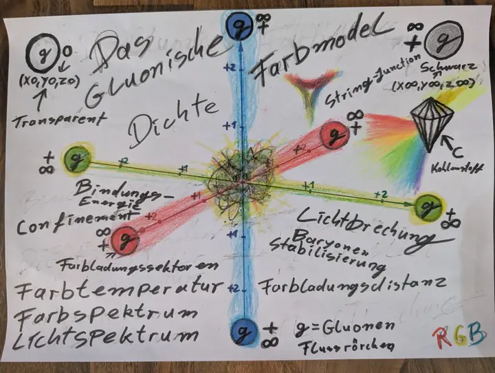
Das Buch · Stand November 2026
War der Urknall ein Phasenübergang?
Das Buch untersucht, ob sich der Urknall als Phasenübergang eines einzigen Mediums beschreiben lässt. Masse, Strahlung, Photonen, Elektronen und das Gitter werden darin als Zustände dieses einen Mediums behandelt.
Methodisch gilt die Messung zuerst: Jede Aussage wird an veröffentlichten Messwerten geprüft, und das Modell soll erklären, warum die Messung so ausfällt. Das Buch folgt dafür der Reihenfolge Messung → Geometrie → Physik: Aus einem Messwert wird ein geometrisches Bild gelesen, erst danach wird es in Gleichungen übersetzt. „Die Formel ist die Übersetzung der Zeichnung, nicht ihr Ersatz.“
Behandelt werden unter anderem Schwerkraft als Dichtegefälle, Lichtablenkung und die Periheldrehung des Merkur, Schwarze Löcher und Sterne als zwei Zustände desselben Objekts, ein Kreislauf zwischen beiden, der Urknall als Übergang eines Schwarzen Lochs über ein Quark-Gluon-Plasma zu einem Hyperstern und auf atomarer Ebene Orbitale als stehende Wellen im Medium.
Buch als PDF (14,9 MB) Im Browser öffnen
558 Seiten, 11 Kapitel, Anhänge A bis J, Literatur und Register. © 2026 Stephan Reuvekamp, alle Rechte vorbehalten.

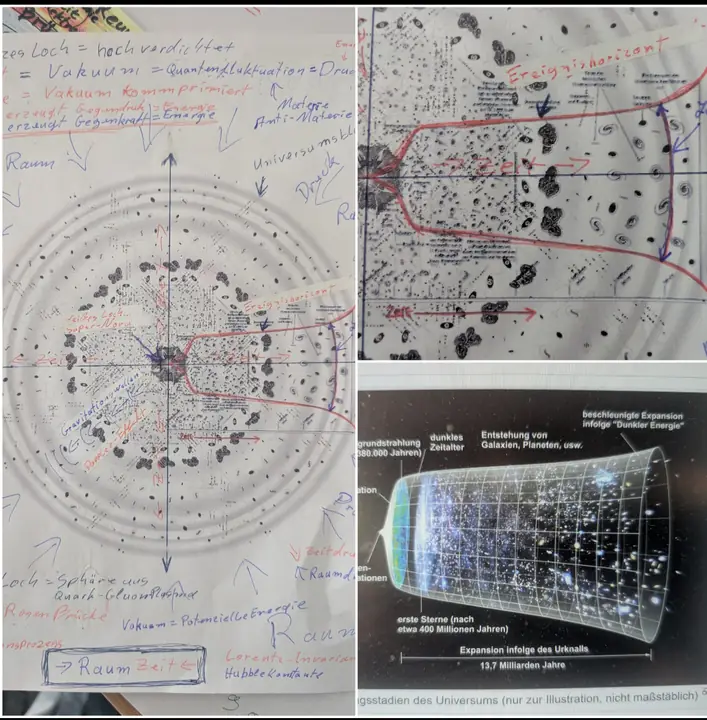
Inhalt: die Kapitel im Überblick
- 1GrundannahmenDer Leitgedanke: Alles hängt auch von der Dichte ab, aber nicht nur von ihr. Grundlage sind das dritte Newtonsche Axiom, das Postulat eines einzigen Elementarteilchens (vom Autor „Exkluon“ genannt) und eine Folgerung; dazu die Arbeitsweise Messung → Geometrie → Physik.
- 2Schwerkraft, Licht und Uhren im MediumSchwerkraft als Dichtegefälle statt als Anziehung. Im dichteren Medium laufen Licht und Uhren langsamer; besprochen werden Lichtablenkung, Shapiro-Verzögerung, Rotverschiebung, die Periheldrehung des Merkur und die Heliopause.
- 3Schwarze Löcher und Sterne: zwei Zustände desselben ObjektsÜber den Zustand entscheidet im Modell die Umfangsgeschwindigkeit am Äquator; Masse, Volumen und Drehimpuls hängen zusammen, und die Form der Hülle hängt von der Drehung ab.
- 4Der KreislaufSchwarze Löcher werden im Modell über ein Quark-Gluon-Plasma wieder zu Sternen und umgekehrt; mit jeder Runde geht Masse verloren. Als Erkennungszeichen des Umschlags wird ein Neutrinoblitz genannt.
- 5Der Urknall als PhasenübergangEin extrem massereiches Schwarzes Loch wird über ein Quark-Gluon-Plasma zum Hyperstern, dessen Supernova mit der Epoche zusammenfällt, die das Standardmodell als Rekombination deutet. Dazu: der Trichter als beobachtbares Universum, Hintergrundstrahlung, Dunkles Zeitalter und erste Galaxien.
- 6Dunkle Energie, Dunkle Materie und Planet 9Alle drei Rätsel sollen sich nach dem Autor durch die Dichte des Mediums erklären lassen, ohne zusätzliche unsichtbare Stoffe.
- 7Atomebene: geschlossene Strömungen, Eigenmoden und VerschränkungQuantensprünge als Geometriesprünge, Orbitale als stehende Wellen im Medium, der Modellversuch mit hüpfenden Öltropfen und das Elektron als Wirbel.
- 8Einordnung: Vorläufer und verwandte ArbeitenEine Übersicht historischer Vorläufer, beginnend mit Descartes (1644). Neu sei nach dem Buch die Verbindung der Einzelideen.
- 9Prüfbare VorhersagenEinundzwanzig Aussagen, die sich mit vorhandenen oder geplanten Messungen prüfen lassen, jeweils mit Prüfweg und Abschnitt.
- 10Transparenz: was geändert wurdeWas aus früheren Fassungen entfernt wurde und warum; Beiträge von KI-Werkzeugen sind einzeln aufgeführt.
- 11Fragen und ihre AntwortenJede Frage nennt die Messung, an der das Modell geprüft wird, und die Antwort, warum die Messung so ausfällt.
Anhänge mit den Rechnungen
- AExistenzschranke für Zwei-Phasen-Gleichgewichte
- BDer 1/r-Dichtehof aus dem Strahlungsgleichgewicht
- CWirbelringe, Torusknoten und stehende Wellen
- DWirbelabstoßung im Medium
- EGrenzfrequenz durch Wirbelwände
- FBjerknes-Kräfte im Medium
- GMassenverhältnisse der geladenen Leptonen
- HDie strömungsfreie Zone als Elektron
- IRotierendes Medium mit Δp = c²Δρ
- JRadialgitter, PPN und Hofmasse
Arbeiten
Das Buch und die Arbeitspapiere aus dem Projektordner, jeweils als Download. Alle Dokumente stammen von Stephan Reuvekamp, Stand November 2026.
Galerie
Tafeln, Zeichnungen, Modelle und Abbildungen aus den Dokumenten. Bildunterschriften mit Anführungszeichen sind wörtlich aus dem Buch, den Arbeitspapieren oder der Bildanalyse übernommen. Zum Vergrößern ein Bild anklicken.


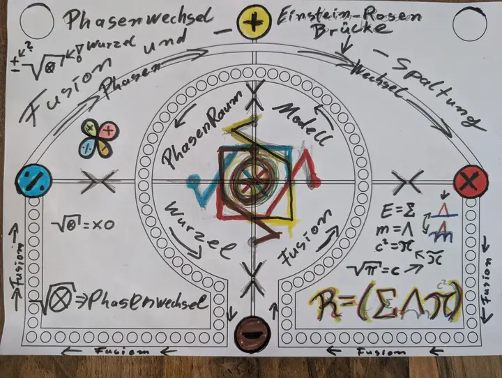

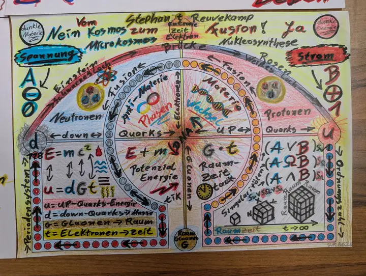

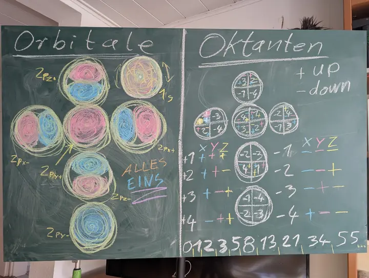

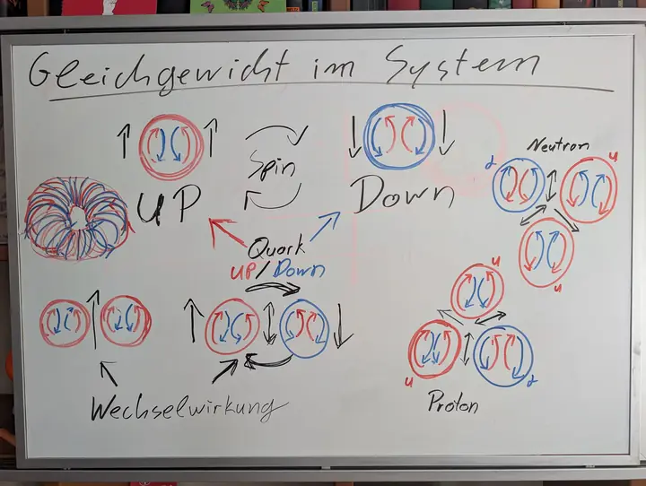

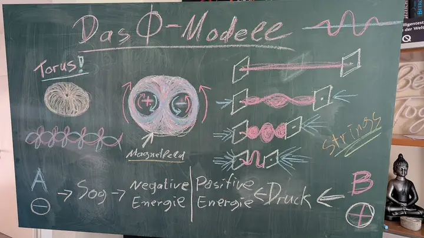

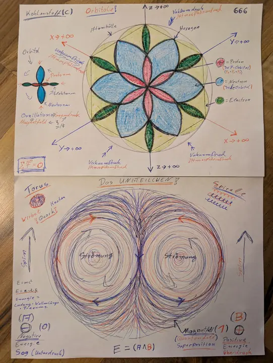

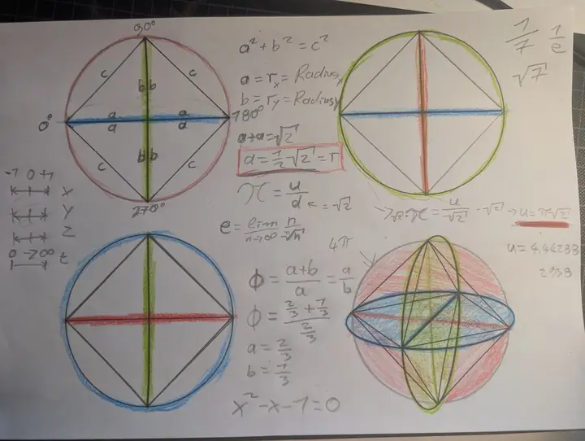

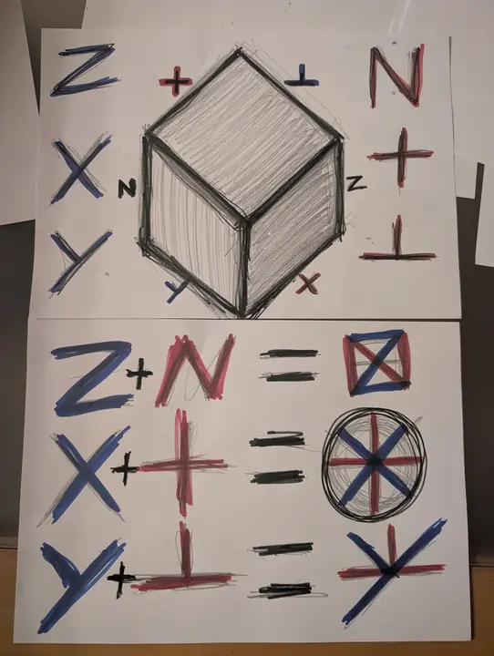

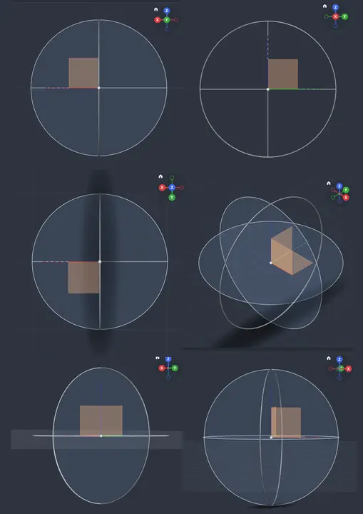

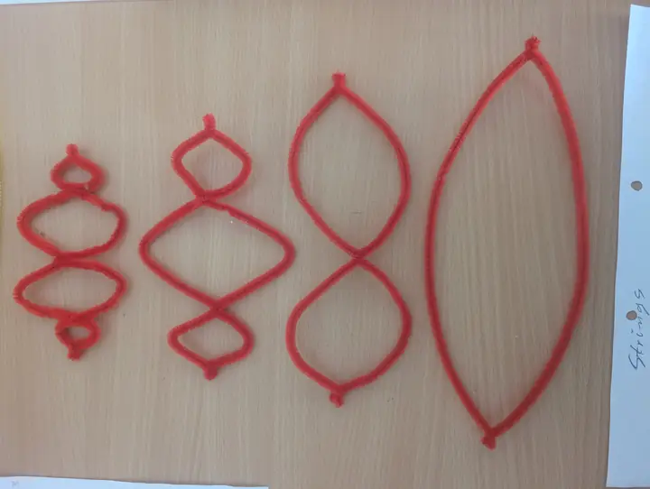

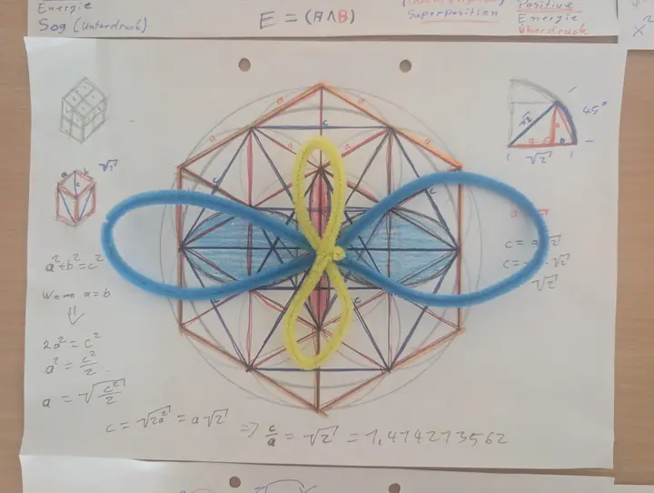

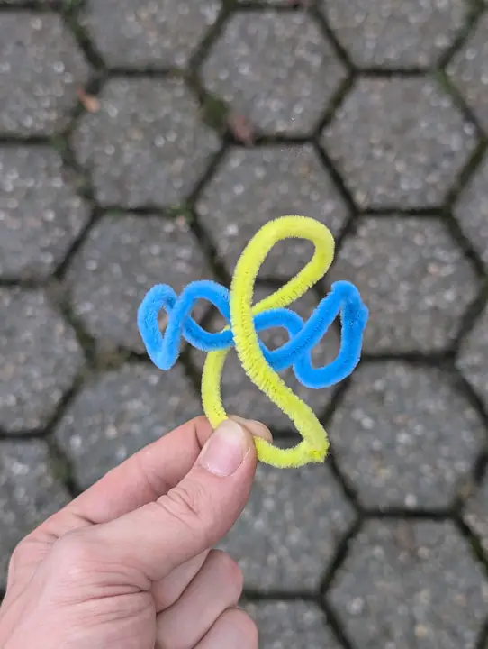

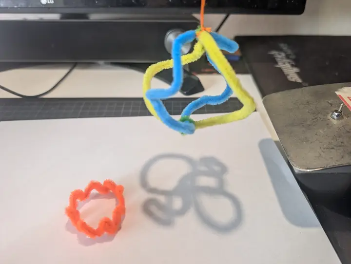

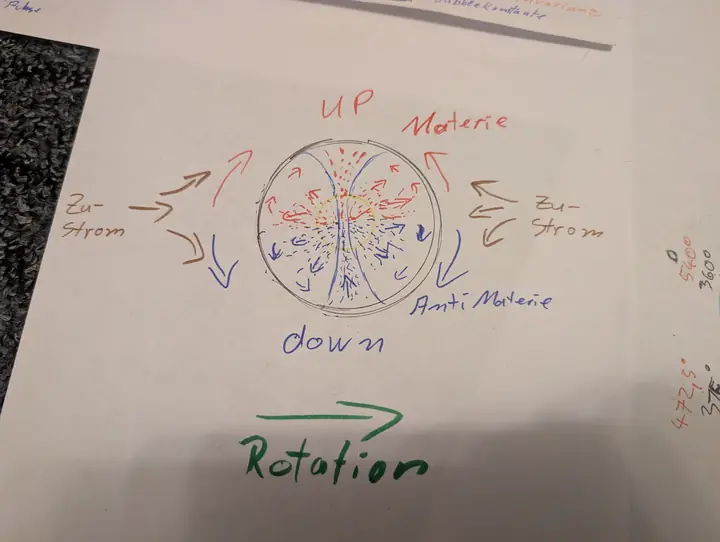

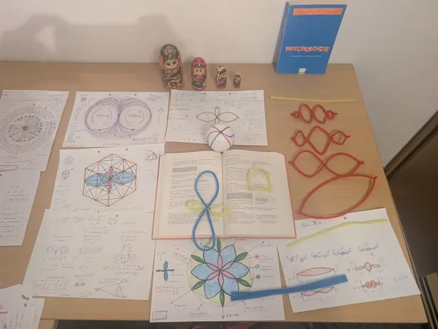

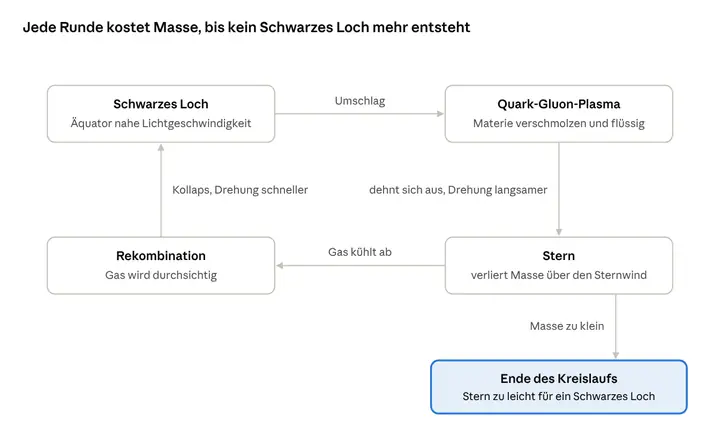

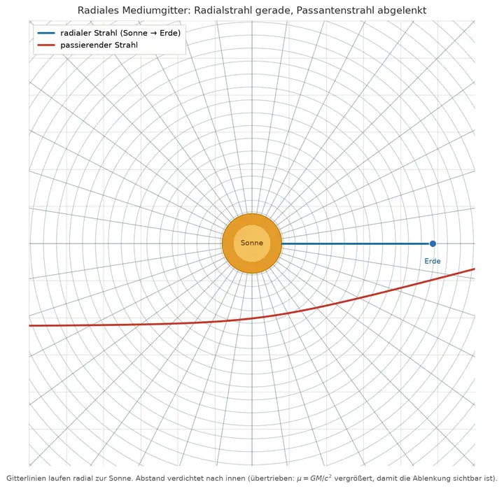

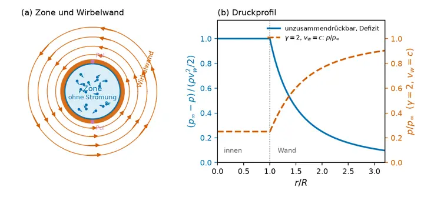

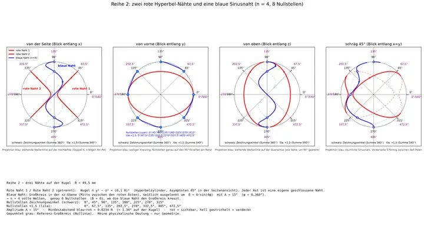

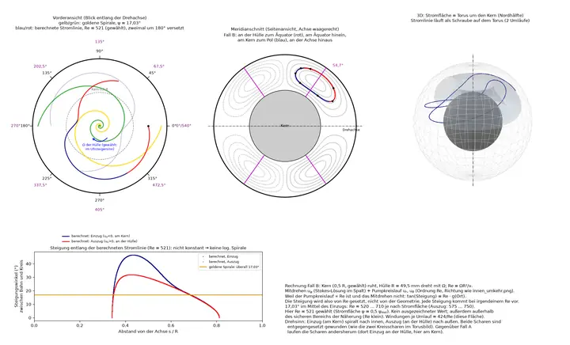

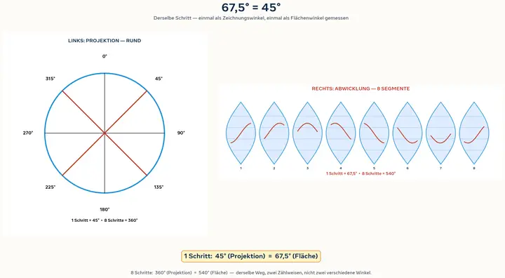

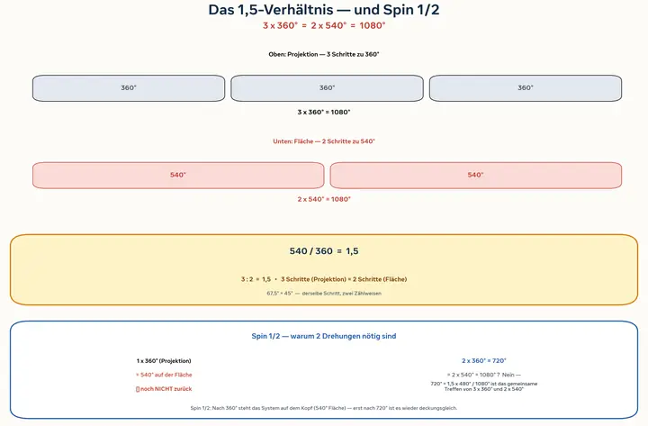

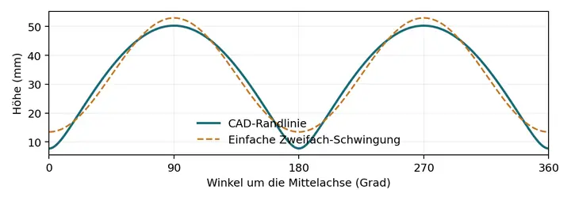
Quellen / Literatur
Fachartikel anderer Autorinnen und Autoren aus der Materialsammlung des Projekts (54 Einträge). Titel, Autoren und Jahr stammen aus dem arXiv-Verzeichnis; die Links führen zur jeweiligen Seite auf arxiv.org. Die Literatur, auf die sich das Buch stützt, steht im Buch selbst (Kapitel „Quellen“ und Literaturverzeichnis).
- Cosmology without the cosmological principle: A study of the large-scale structure effects in the background universe
- Testing Antimatter Couplings with Spectroscopy
- NestyNet. II. Coherent Function-Space Posteriors from Scientific Neural Surrogates (or How to Avoid Expensive MCMC)
- Newton's Second Law: A Theoretical Identity Derived from the Principle of Excluded Perpetual Motion and the Weak Equivalence Principle
- Quantum transport in a non-Hermitian 1D synthetic lattice: from quantum Zeno reflection to near-perfect absorption
- A floor and a ceiling for the advancing contact angle
- A commutant gate for spectral fitting through symmetry forced degeneracy
- On the relationship between the gain of Stimulated Raman Backscatter of a short-pulse laser in a plasma and the Pierce parameter for XFELs
- Do ions have a coating in neuronal electrolytes under an electric field?
- Gravity-Aligned Vertical Electron-Positron Linear Collider
- Radiation Pressure Effect on the degenerate Electron-Positron Plasma Dynamics
- Long-range magnetic interaction within quantum electrodynamics formalism
- GUEST: Gravitational Universe Exploration with Satellite Tracking. A passive satellite laser-ranging mission for the dark gravitational Universe
- Colored ΔT noise probes the topological character of edge modes
- Geometric Qubits in Programmable Atomic Trimers
- Coupling of negative-positive trapped-ion pairs
- Higgs and Yukawa Structure in a Clifford Algebra Model with Three Generations and S3 Family Symmetry
- A possible solution to the mystery of the ANITA anomalous events
- Theoretical proof of the constancy of the speed of light in a vacuum
- A matter-wave Fabry-Pérot cavity in the ultrastrong driving regime
- Origin of Galaxies
- Penetrating the horizon of a hydrodynamic white hole
- Unlock giant nonreciprocity via multi-valued behavior of non-Hermitian zero-index materials
- Analogue simulation of quantum gravity black hole models in a dc-SQUID array
- Dynamics of Vortex Clusters on a Torus
- superB/NRPy: Scalable, Task-Based Numerical Relativity for 3G Gravitational Wave Science
- Dispersion in Rotating Electron-Positron-Ion Quantum Plasma
- A Unified Framework for High-Dimensional Pure Root Lattices, Sphere Packing, and Cosmological Implications
- Tutorial on running median subtraction filter with application to searches for exotic field transients in multi-messenger astronomy
- Universal Diffusion in Coulomb Crystals
- On the art of designing effective space-times with free surface flows in Analogue Gravity
- Combination of operational modal analysis algorithms to identify modal parameters of an actual centrifugal compressor
- Ultra-bright and energy-efficient quantum-dot LEDs by idealizing charge injection
- Out-of-time-order correlators in electronic structure using Quantum Computers
- Remove point-mass concept-remove singularities from GR
- Acoustic pressure modulation driven by spatially non-uniform flow
- How to create analogue black hole or white fountain horizons and LASER cavities in experimental free surface hydrodynamics?
- Constraints on black hole charges in M87* and Sgr A* with the EHT observations
- Improvement of Geant4 Neutron-HP package: Doppler broadening of the neutron elastic scattering kernel and cross sections
- Fehlvorstellungen zur Superposition in der Quantenphysik
- Tensor robust principal component analysis of lightning images: butterfly effect of blackholes
- Identifying Damage-Sensitive Spatial Vibration Characteristics of Bridges from Widespread Smartphone Data
- Blackhole-Inspired Thermal Trapping with Graded Heat-Conduction Metadevices
- Invariants in Co-polar Interferometry: an Abelian Gauge Theory
- Are We Entering a Paradigm Shift for Dark Matter?
- Fractal Properties and Characterizations
- Information Missing Puzzle, Where Is Hawking's Error?
- Gravitational field around blackhole induces photonic spin-orbit interaction that twists light
- Erdmessung mit Quanten und Relativität
- On non-Poissonian Voronoi tessellations
- Applications of Many-Core Technologies to On-line Event Reconstruction in High Energy Physics Experiments
- Many-core applications to online track reconstruction in HEP experiments
- Local Alignment of the BABAR Silicon Vertex Tracking Detector
- Measurement of the Charge Collection Efficiency after Heavy Non-Uniform Irradiation in BaBar Silicon Detectors
Über mich
Stephan Reuvekamp ist der Autor des Projekts Realität oder Illusion!?
Viele Abschnitte seiner Arbeit gehen von einer Zeichnung, einem Kugelmodell oder einer Projektion aus. Diese Arbeitsweise stammt, so das Vorwort des Buchs, aus der graphischen Statik, in der Kräfte und Gleichgewichte zuerst als Figuren konstruiert und erst danach als Gleichungen geschrieben werden.
[Platzhalter: kurze persönliche Vorstellung, falls gewünscht]
Kontakt
Fragen und Anmerkungen zum Projekt gern per E-Mail. [Platzhalter: Die Adresse unten ist noch nicht eingerichtet und muss ersetzt oder angelegt werden.]